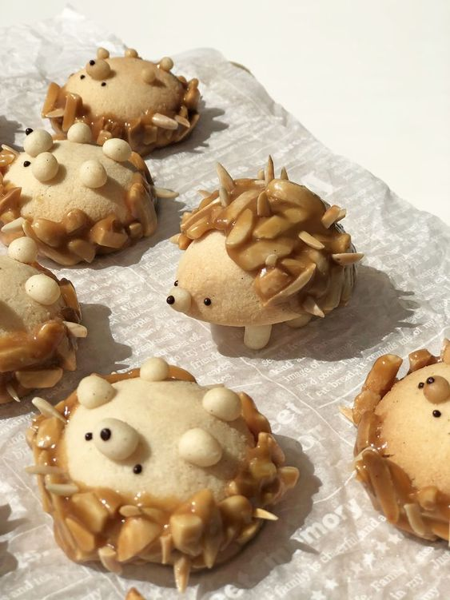

Hedgehog Florentine Nougat Butter Cookies

Description
Adorable hedgehog cookies, delicately crisp and buttery rich with sweet caramelized almonds. Perfect to pair with coffee or tea as an afternoon snack!
This recipe is derived from this YouTube tutorial I found on Pinterest.
Ingredients (for 9 cookies)
- 2.5 oz slivered almonds
- 3 tbsp sugar
- 1 1/2 tbsp honey
- 2 tbsp heavy cream
- 2/3 cup cake flour
- 3 tbsp almond flour
- 1/4 cup confectioner's sugar
- 1/2 tsp vanilla paste
- 1/4 cup unsalted butter (for dough)
- 1 1/2 tbsp unsalted butter (for nougat)
- 1/2 tsp salt (split into two 1/4 tsp, one for nougat, one for dough)
Steps
Let's start the cookies!
- Combine butter, salt, and confectioner's sugar in a bowl. Mix until combined. Add vanilla paste and mix.
- In the same bowl, add sifted cake flour and almond flour. Gently fold until it becomes a doughy texture.
- Scoop out 1 tbsp sized pieces of dough and roll into balls. Place onto baking sheet. Remember: this recipe is for 9 cookies. Save the remaining dough for the hedgehog's nose and legs!
- Cover the baking sheet with saran wrap and refrigerate for 50-60 minutes.
For the nougat:
- Pour slivered almonds onto a baking sheet. Bake at 350 degrees F for 6-7 minutes. Let cool.
- Put butter, honey, and heavy cream into a sauce pan and put on medium heat. Then, add sugar and salt. Stir.
- Bring this mixture to a boil and add the cooled toasted almonds. Stir, while boiling until thickened.
- Spread the nougat onto a sheet and let it cool down.
Baking and assembling the cookies:
- Bake the chilled dough at 320 degrees F for 20-25 minutes. If there are cracks when you take them out, slightly press while the cookies are still hot.
- Attach nose and leg details with the extra dough. Bake at 320 degrees F for 5-6 minutes.
- Divide almond nougat into 9 portions on a sheet, then slightly melt using residual heat from the oven.
- Wrap the lower portion of the cookies with the nougat to form the hedgehogs' spikes. Add extra quills with more almonds if you like.
- Use melted chocolate for facial details, then enjoy!